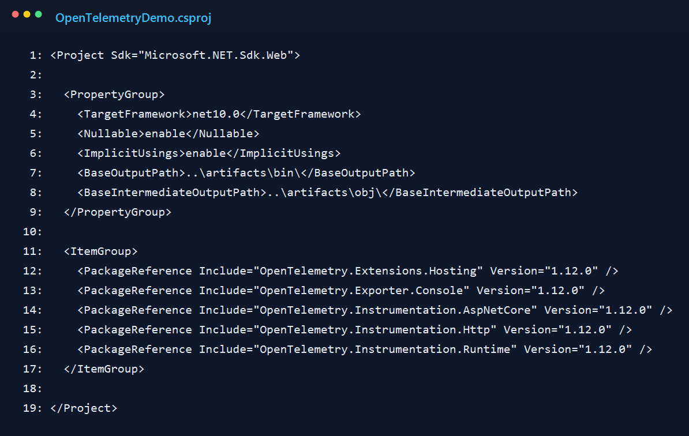
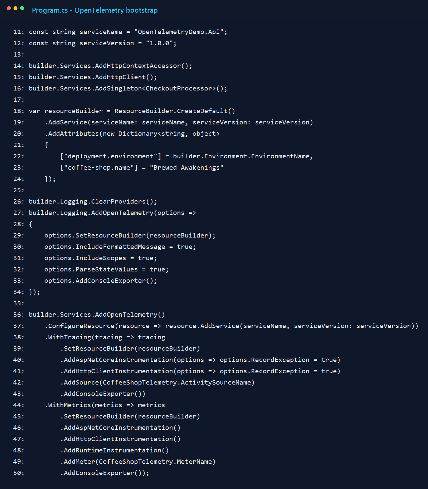
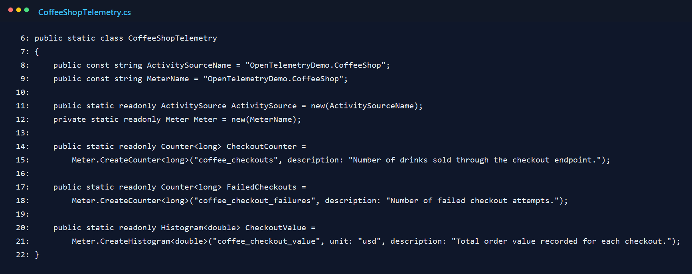
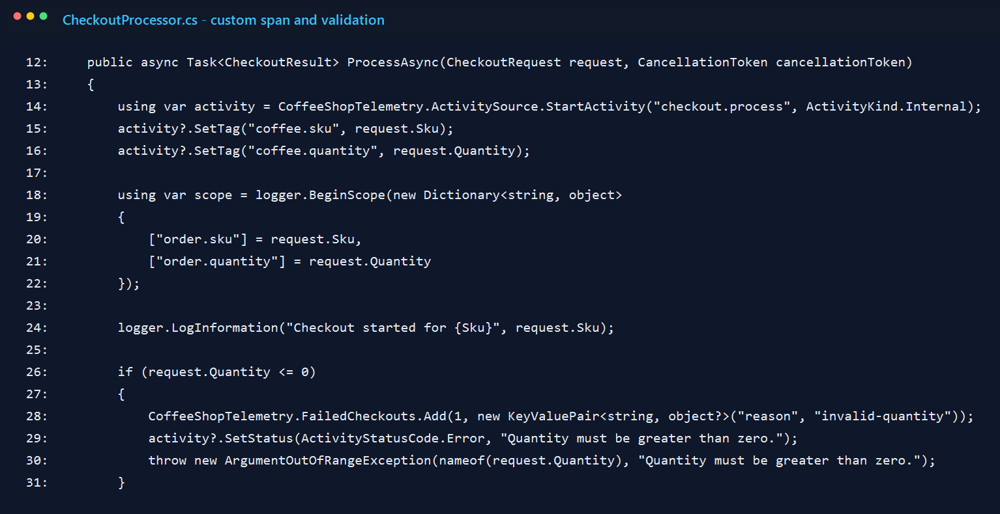
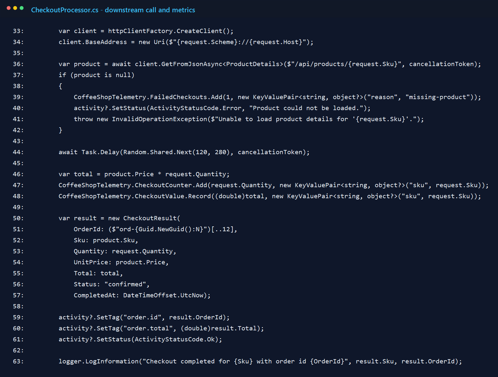
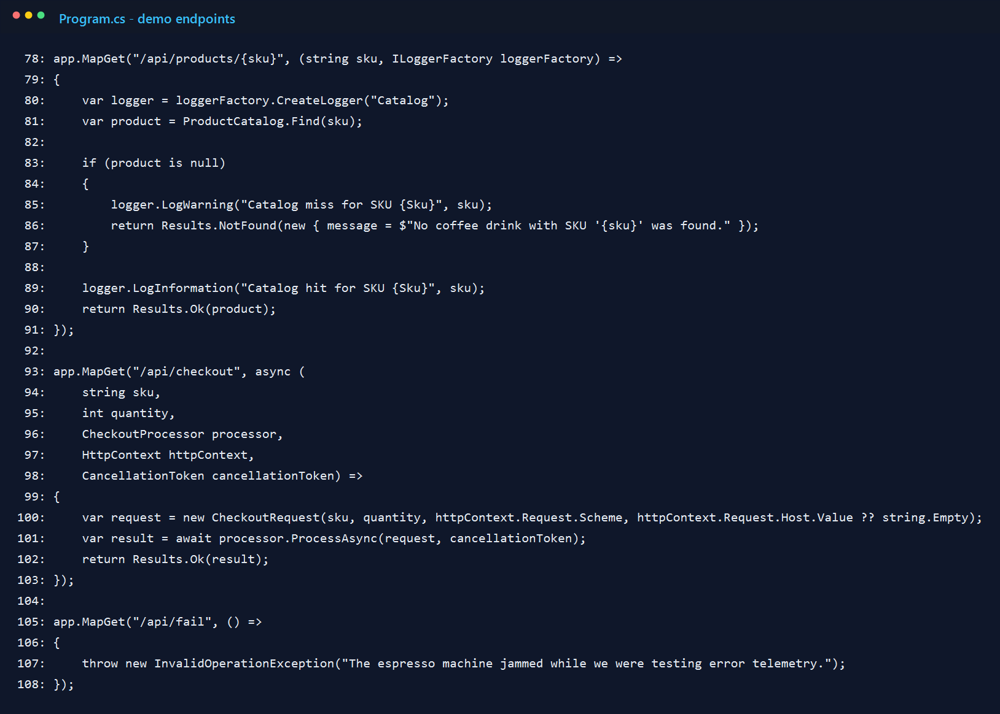
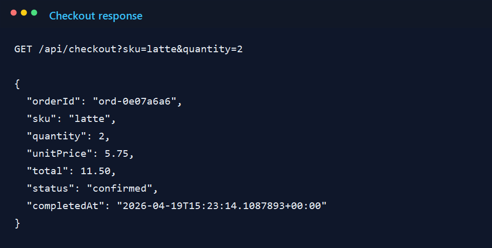

Why I built it this way
Most OpenTelemetry samples lose me when they start with package lists and collector diagrams before there is anything interesting to observe. I wanted the opposite: one simple transaction first, then the telemetry around it.
The API has three routes. One gets product data, one runs checkout, and one fails on purpose. That was enough to test the parts I cared about: the incoming request, the work inside the app, one downstream HTTP call, a couple of business metrics, and a failure path that was not just theoretical.
1. Start with the right package setup
I kept the dependency set small on purpose. There is a hosting package, a console exporter, ASP.NET Core and HttpClient instrumentation, and runtime instrumentation for process-level signals. I could have added a collector right away, but that would have made the first version harder to explain.

2. Wire up logs, traces, and metrics in one place
The main setup happens at the top of Program.cs. I define the service name once and reuse it for logs, traces, and metrics. That sounds minor, but it makes the console output much easier to scan because everything belongs to the same service.
I also stayed with the console exporter longer than I normally would. When I am learning or validating instrumentation, I like seeing the raw output before I send anything to a dashboard. It removes one whole layer of "is the app wrong, or is the UI hiding something?"

3. Give the business logic its own telemetry names
The first version only had framework instrumentation, and it felt too generic. I could see HTTP requests, but I could not quickly tell what the app was doing. That is why I added a dedicated ActivitySource and a small Meter for checkout behavior.
I kept the metric names plain. I wanted to answer simple questions without decoding my own clever naming scheme: how many checkouts happened, how many failed, and what was the order value?

4. Wrap the checkout flow in a custom span
The checkout processor starts an internal activity named checkout.process. That ended up being the most useful span in the whole sample because it represents the work I actually care about, not just the HTTP request around it.
I attach the SKU and quantity as tags, then open a logging scope so the exported logs carry the same context. I also made invalid input show up clearly. That was intentional, because a demo that only proves the happy path usually gives you a false sense of confidence.

5. Record business metrics where the work actually completes
After the processor finishes the product lookup and a small simulated delay, it records the two business facts I cared about for this demo: quantity sold and order value. This was the part where the sample started to feel useful instead of academic.
I also keep the span open long enough to add the generated order id and total. Without those details, the trace still exists, but it feels thin. With them, I can look at one request and understand what actually happened.

6. Keep the demo endpoints obvious
I did not try to make the endpoints clever. The routes are intentionally obvious: one for products, one for checkout, and one for a forced failure. For a sample like this, I would rather have boring routes and readable telemetry than a more realistic API that distracts from the point.

7. A successful request is easy to read
When I hit /api/checkout?sku=latte&quantity=2, the API returns a compact receipt-style payload. It is not fancy, but it gives me a real transaction to trace: two lattes, a total, and an order id.

8. The console exporter tells the whole story surprisingly well
This was the moment I knew the sample was doing what I wanted. One request produced the server span for /api/checkout, the internal checkout.process span, the tags I added myself, and the custom metrics for quantity and order value.
The forced failure route matters too. If I trigger /api/fail, I get a 500 path with recorded error details. I left that in because observability is not very convincing if it only looks good when everything works.

Final thought
I like this kind of sample because it makes OpenTelemetry feel less mysterious. It is easier to understand when I can point to a specific method and say, "that line created the span," or "that counter moved because someone bought two lattes."
If I were taking this further, I would switch from the console exporter to OTLP and send the same signals to a collector-backed UI. But I would still start here. Console output is not glamorous, but it is honest, and for a first pass that is exactly what I want.